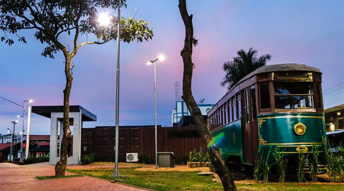

Escolha uma cidade para conhecer
Santa Bárbara d'Oeste

Veja mais sobre a cidade de Santa Bárbara d'Oeste
Dados Populacionais:
| Número de Habitantes |
Território |
Doses de vacina contra covid-19 |
| 194 390 |
271.492 km² |
24.636 |
Pontos Turísticos:
- Parque Taene
- Parque dos Ipês
- Teatro municipal
São Paulo

Veja mais sobre a cidade São Paulo
Dados Populacionais:
| Número de Habitantes |
Território |
Doses de vacina contra covid-19 |
| 12,33M |
1.521,110 km² |
1.846.510 |
Pontos Turísticos:
- MASP - Museu de Arte de São Paulo Assis Chateaubriand
- Mercadão Municipal
- Bairro Liberdade
Rio de Janeiro

Veja mais sobre a cidade Rio de janeiro
Dados Populacionais:
| Número de Habitantes |
Território |
Doses de vacina contra covid-19 |
| 6,748 M |
1.255 km² |
1.309.916 |
Pontos Turísticos:
- Parque Lage
- Aqua Rio
- Ilha Fiscal
Campinas

Veja mais sobre a cidade Campinas
Dados Populacionais:
| Número de Habitantes |
Território |
Doses de vacina contra covid-19 |
| 1,214 M |
795,7 km² |
188.363 |
Pontos Turísticos:
- Lagoa do Taquaral
- Maria Fumaça
- Bosque dos Jequitibás
Dubai

Veja mais sobre a cidade Dubai
Dados Populacionais:
| Número de Habitantes |
Território |
Doses de vacina contra covid-19 |
| 3,331 M |
4.114 km² |
- |
Pontos Turísticos:
- Burj Khalifa
- Ópera de Dubai
- Deserto de Duba